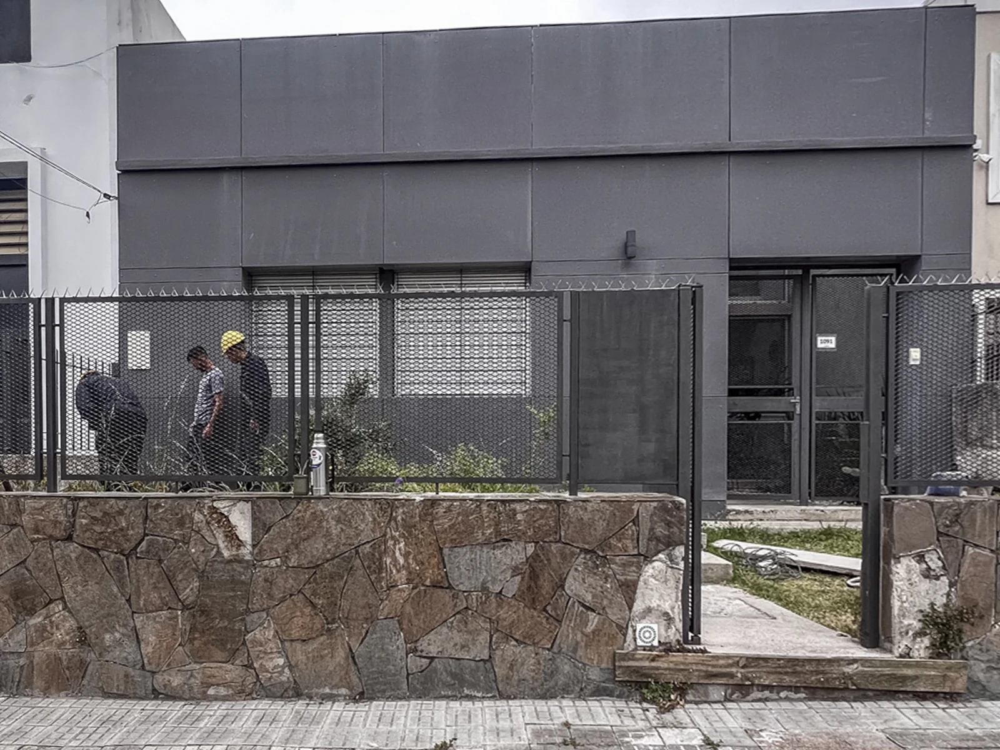
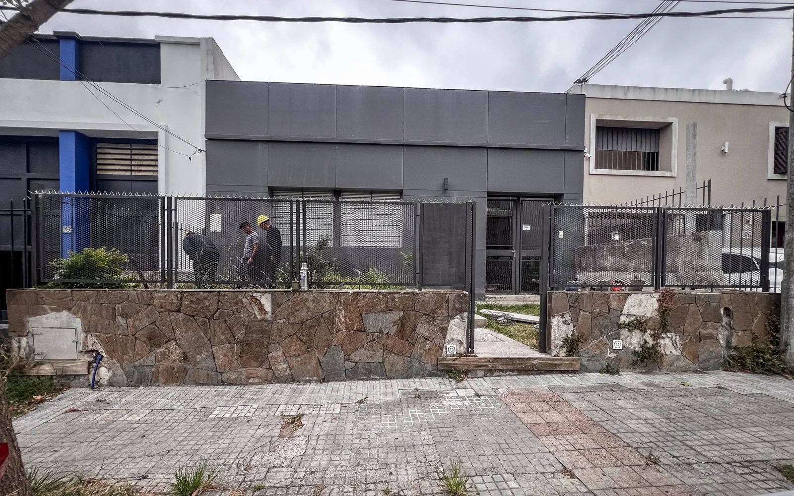
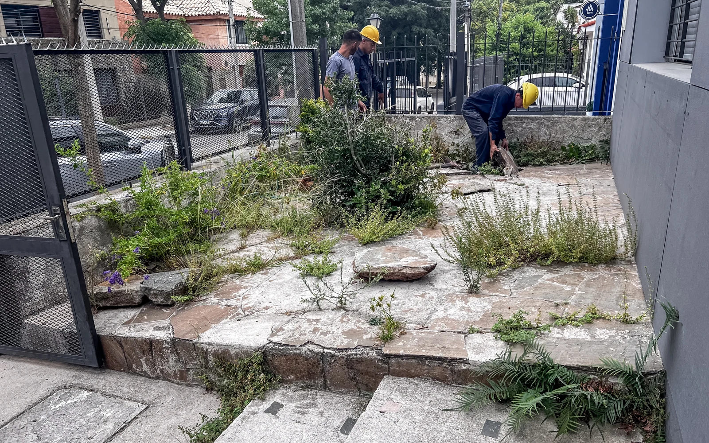
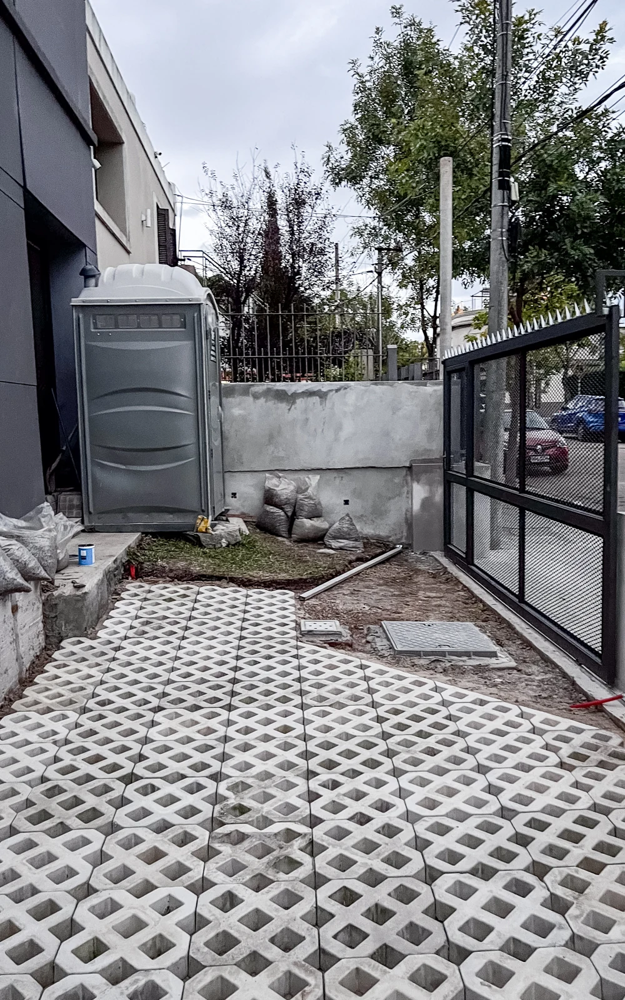

06 / PROYECTO
Ingreso
Berro
Reforma del acceso de una vivienda, incorporando una nueva llegada peatonal, ingreso vehicular y vegetación.
El proyecto consistió en la reforma del acceso de una vivienda unifamiliar, buscando integrar la nueva intervención con la arquitectura existente.
Además de actualizar la imagen del frente, se reorganizó el ingreso peatonal y se sumó un acceso vehicular. La propuesta incorpora nuevas jardineras y vegetación, que acompañan los recorridos y permiten construir una llegada más clara y vinculada con el carácter de la vivienda.
ANTES / DESPUÉS
Reforma del acceso



